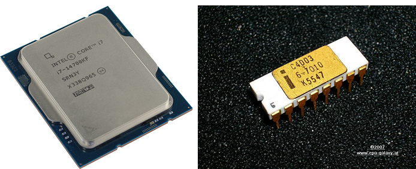
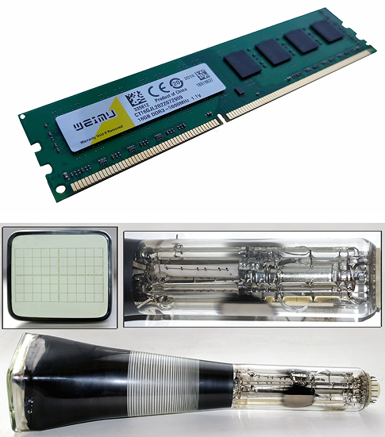
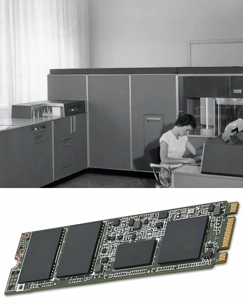
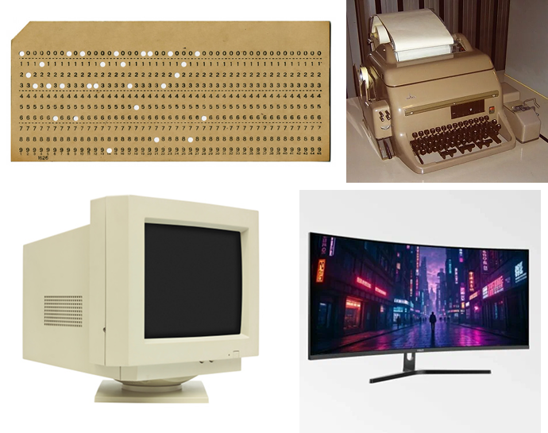

Как устроен компьютер
Процессор
Сейчас это многоядерные чипы с огромной вычислительной мощностью. А начиналось всё с Intel 4004 в 1971 году — первого микропроцессора, который был слабее современного калькулятора, но запустил революцию.

Оперативная память
Сегодня это скоростные планки DDR5. В 40-х годах данные хранили на трубках Уильямса — биты информации светились точками на экране электронно-лучевой трубки.

Накопители
Жёсткие диски с вращающимися пластинами были стандартом десятилетиями. Теперь твердотельные накопители (SSD) с молниеносной скоростью чтения и записи стали нормой, а в 50-х годах данные хранились на перфокартах.

Видеокарта
Современные видеокарты — это мощные графические процессоры (GPU), способные на сложные вычисления. В 80-х годах первые видеокарты были примитивными, обеспечивая базовую графику для игр и интерфейсов.
